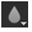

Icon
Tool
Keyboard Shortcut
Function
Brush
N (toggles between Brush and Eraser)
Applies colors atop the current plate, or blends colors with the current plate. You can also clone from surrounding frames.

Eraser
N
Removes pixels from existing strokes and brings background back.
Clone
C (toggles between clone and Reveal)
Applies pixels from one region of the current plate to another region of the current plate.
Reveal
C
Applies pixels from a source plate to a destination plate in the corresponding place.

Blur
X (toggles between Blur, Sharpen and Smear)
Blurs the image in the area of the brush stroke.

Sharpen
X
Sharpens the image in the area of the brush stroke.
Smear
X
Smears the area of the smear brush stroke, stretching the selected pixels over their surrounding area.
Dodge
D (toggles between Dodge and Burn)
Brightens the background color on the area of the brush stroke to reflect the brush stroke. Using this tool on black produces no change. No part of the stroke area is darkened.
Burn
D
Darkens the background color on the area of the brush stroke to reflect the brush stroke. No part of the stroke area is lightened.